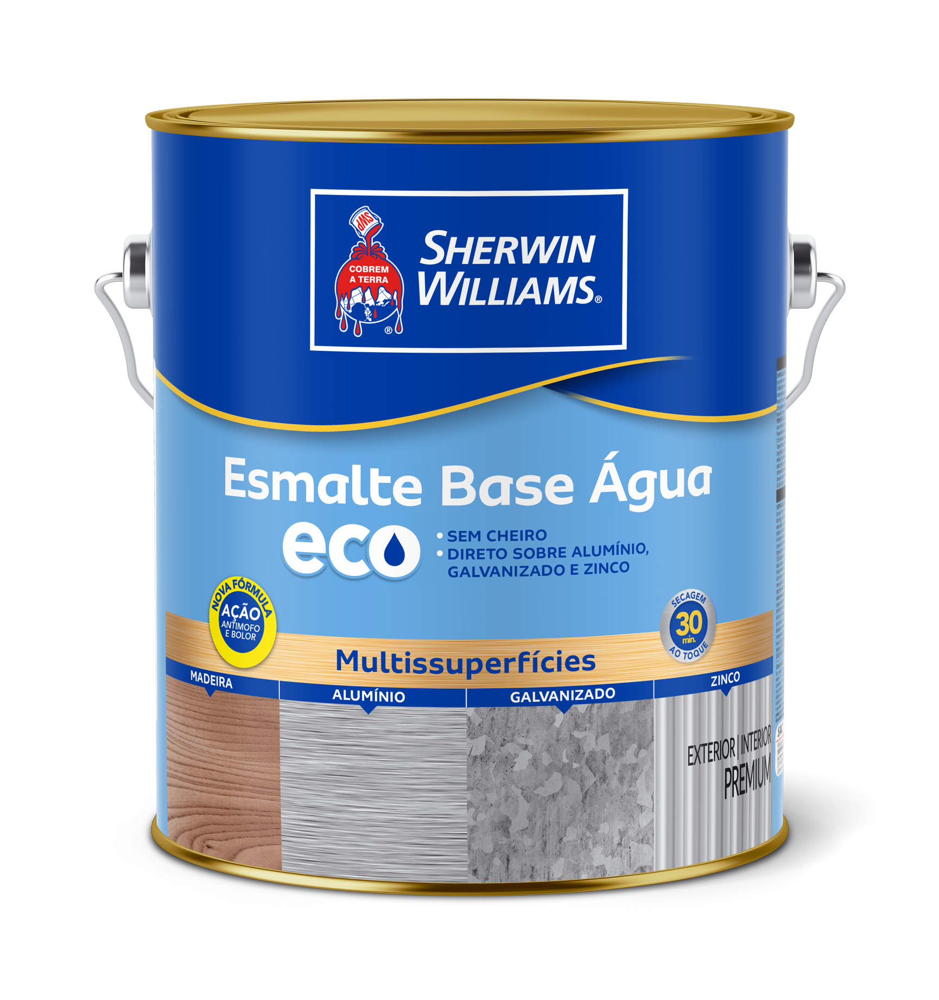
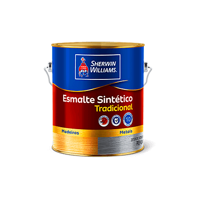
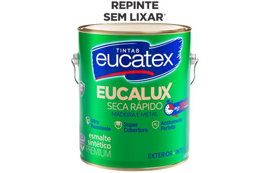
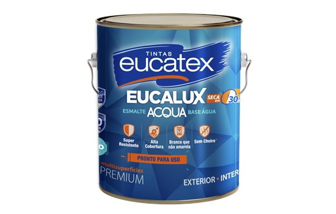
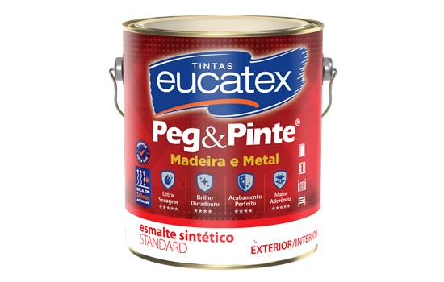

Eco Esmalte Base Água Alto Brilho
Tinta esmalte à base d’água com alta cobertura e proteção antimofo. Ideal para aplicação em madeiras, metais, alumínio e galvanizados. Não amarela com o tempo, proporciona secagem rápida entre demãos e é totalmente sem cheiro, reduzindo drasticamente o tempo de interdição das áreas sob manutenção.
Eco Esmalte Base Água Acetinado
A mesma tecnologia e sustentabilidade da linha Eco Esmalte com um acabamento acetinado requintado e de brilho discreto. Oferece alta proteção contra fungos, secagem rápida, aplicação sem cheiro e excelente resistência para superfícies internas ou externas de madeira e metal.

Esmalte Sintético Tradicional Alto Brilho (Base Solvente)
Sua fórmula inovadora e de altíssima qualidade proporciona altíssima cobertura e um fino acabamento espelhado para superfícies externas e internas de madeiras e metais. Conta com máxima proteção contra intempéries e uma incrível durabilidade de até 10 anos.

Eucalux Seca Rápido Alto Brilho (Base Solvente)
Esmalte sintético premium com secagem recorde: aplicação entre demãos em apenas 45 minutos! Contém silicone em sua fórmula para garantir um acabamento perfeito e fácil limpeza. Graças à sua tecnologia, permite repinturas sobre acabamentos antigos sem a necessidade de lixamento prévio.

Eucalux Acqua Base Água Alto Brilho
Esmalte ecológico à base de água de altíssimo desempenho. Protege e embeleza metais e madeiras sem agredir o meio ambiente. Apresenta uma secagem super rápida, não amarela com o passar dos anos e garante excelente resistência às ações do sol e da chuva.

Peg & Pinte Esmalte Sintético Alto Brilho (Base Solvente)
Peg & Pinte Esmalte Sintético na categoria Standard, de alta performance, excelente acabamento e durabilidade. Indicado para pintura em metais ferrosos, madeira, alumínio, galvanizado, PVC e alvenaria. Uso Externo e Interno. Sua fórmula inovadora tem secagem rápida.